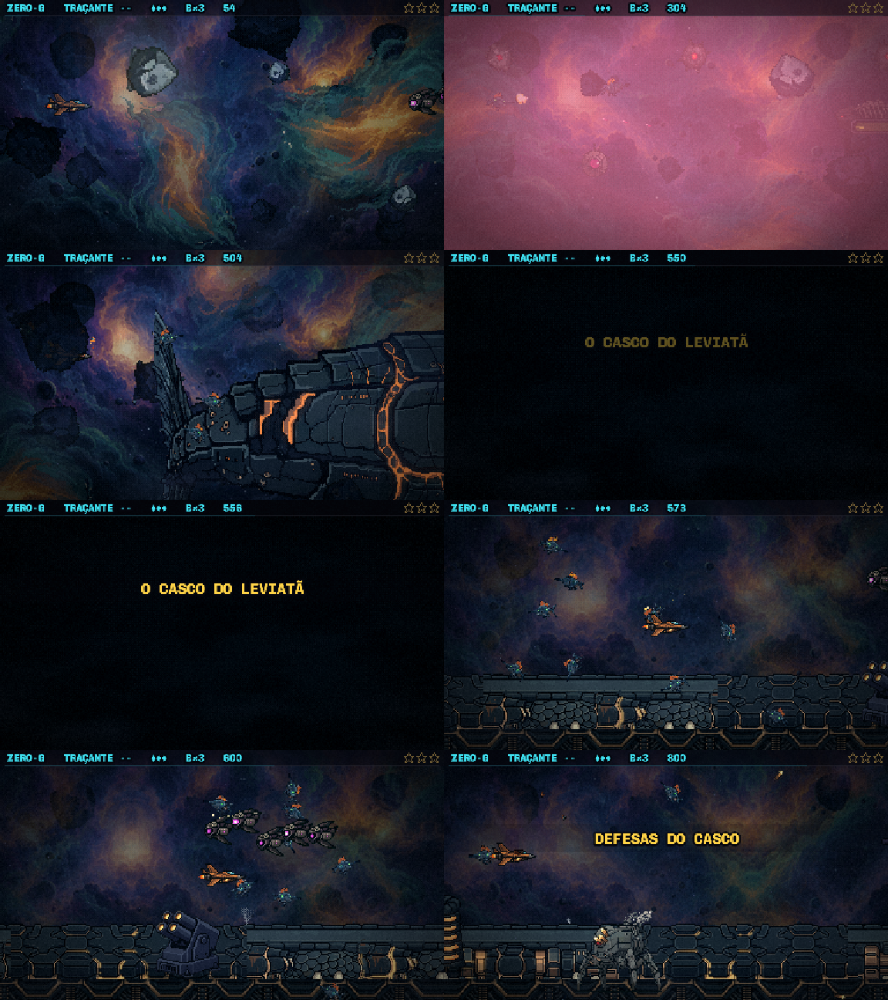

O cenário do casco — rodada 4: instalado
09/11 · plano plans/2026-11-09-cenario-casco-rodada4.md · a chave ?cenario=novo
saiu: o cenário novo é o padrão da F3.
A virada
- O preto: 0,5 s escurecendo, 1,5 s de preto cheio com "O CASCO DO LEVIATÃ", 0,5 s clareando. O céu do casco liga no escuro total.
- Sem dano às cegas: no preto cheio todo tiro inimigo some; a nave fica sem dano (sem piscar) do começo do escurecer até 1 s depois de clarear; o Ato 2 inteiro andou +2 s (a Serpente em 97 s).
- Por que o 1 s depois de clarear: a sonda (com a nave parada no meio da tela, sem se defender) mostrou kamikazes do Ato 1 que já estavam na tela antes do preto chegando na nave 0,03 s depois de clarear. O respiro dá tempo de ver e desviar.
- A prova (
scripts/_cenario/_f3-virada-sonda.mjs): nenhum inimigo ou tiro nasceu no escuro, nenhum golpe do escurecer até o fim do respiro, a Serpente entra em 97,0 s, o céu do casco ligado. VIRADA OK.
A corrida real de 48 a 64 s, sem chave nenhuma: o rabo, a bruma, o preto, o Ato 2.

A F3 inteira na sonda da virada: 5 s, 30 s, 45 s, 50 s, o preto (55 s), 57,3 s, 60 s e 80 s.
O desempenho num navegador de verdade (Chrome, RTX 5070)
| trecho | sem o cenário novo | com o cenário novo |
|---|---|---|
| as 3 cabeças, 40 s (mediana / p95 por passo) | 0,6 / 1,5 ms | 0,8 / 1,7 ms |
| a enguia, 55 s (mediana / p95) | — | 0,6 / 1,0 ms (pior 4,3) |
+0,2 ms por passo, dentro do limite de +1 ms; um quadro tem 16,7 ms.
O tranco antigo da chegada dela: num navegador de verdade ele é de 23–54 ms (1 a 3 quadros), não o segundo inteiro da sonda. Medi a cópia do casco vivo sozinha: 0,5 ms — não é ela. O tranco cai no instante em que ela irrompe do rombo e os pedaços explodem, que é da luta. Como este item não mexe na luta, ficou como estava (anotado).
A retirada da chave: o que conferi
- Quem liga o cenário novo é a cena do jogo, só na F3. A cena de transição 3 (a do casco crítico) também usa o mesmo fundo de nebulosa e não mudou (aberta e fotografada: sem erro, o cenário novo desligado nela).
- O Ato 1 da F3 comparado com o modo antigo, na mesma sorte: igual, a não ser a pintura parada (a correção da emenda que você pediu).
- O treino e o atalho da Serpente, as outras fases (o modo da nebulosa é só da F3), o build de produção e todos os testes do projeto: ok. A enguia segue idêntica à maquete.
- Ficaram duas chaves de dev só para comparar:
&casco=0(sem o casco vivo) e&batalha=0(sem a batalha ao fundo).

A cena de transição 3, depois da retirada da chave.